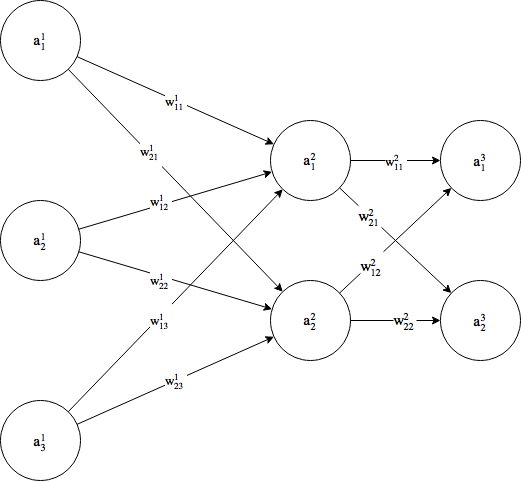

Artificiële Neurale Netwerken
Daan VanoverloopMotivatie
- Computer speelt computerspel
- Netwerk van neuronen
Wat is een neuraal netwerk
- Biologisch vs artificiëel
- Verschillende lagen
- invoer
- verborgen
- uitvoer
- Bepaalde uitvoer voor elke invoer
- Vergelijkbaar met wiskundige functie
Toepassingen backpropagation
- Handschrift ontcijferen
- Spraakherkenning
=> Gekende trainingsvoorbeelden
Het perceptron

- Invoer en gewichten zijn 2 vectoren
-
Product van vectoren = gewogen som
$$s = W^T \cdot X = \sum_{j=1}^{n} w_j x_j$$ - Activatie: $$ \begin{cases} 0 &\quad\text{als } s \leq drempelwaarde \\ 1 &\quad\text{als } s > drempelwaarde \end{cases} $$
- Sigmoïdefunctie

Een netwerk van neuronen
-
Feedfoward algoritme
$$A^{(l)} = \sigma(W^{(l)} \cdot A^{(l-1)} + B^{(l)})$$
Het berekenen van de kost
- Trainen aan de hand van gekende trainingsvoorbeelden
- Kwadratische kostfunctie: $$C(X) = \frac{||Y(X) - A^{(L)}(X)||^2}{2}$$
- Norm van verschil tussen uitvoer netwerk en gewenste uitvoer
Op zoek naar het minimum
- Hoe kost minimaliseren?
- Kostfunctie afleiden naar de gewichten en de biasen
- Hoe verandert de kost naarmate gewichten en biasen veranderen?
- Afgeleiden aftrekken om nieuwe gewichten/biasen te verkrijgen:
- $$W'^{(l)} = W^{(l)} - \eta \frac{\partial C}{\partial W^{(l)}}$$
- $$B'^{(l)} = B^{(l)} - \eta \frac{\partial C}{\partial B^{(l)}}$$
- Leersnelheid $$\eta$$
Backpropagation
- Door af te leiden vinden we:
- Voor de fout van het laatste laag:
$$\delta^L = \frac{\partial C}{\partial z^L_j} = (A^{(L)} - Y) \odot \sigma'(Z^{(L)})$$
- Voor de fout van de andere lagen:
$$\delta^l = \frac{\partial C}{\partial z^l_j} = ((W^{(l+1)})^T \delta^{l+1}) \odot \sigma'(Z^{(l)})$$
- Voor de gewichten/biasen:
$$\frac{\partial C}{\partial B^{(l)}} = \delta^l$$
$$\frac{\partial C}{\partial W^{(l)}} = \delta^l (A^{(l-1)})^T$$
- Voor de fout van het laatste laag:
Formules samengevat
- Feedforward: uitvoer berekenen voor bepaalde invoer
- Kost berekenen met kwadratische kostfunctie
- Verandering van gewichten en biasen bepalen om kost te verlagen
- Nieuwe waarden van gewichten en biasen bepalen
Andere trainingsmethoden
- NeuroEvolutie
- NEAT algoritme
- Netwerk om games te spelen
- Straffen en belonen
- Patronen herkennen
Conclusie
- Bij groot aantal trainingsvoorbeelden: backpropagation
- Evolutie als het gewenste resultaat niet concreet bepaald is
- Toekomst?